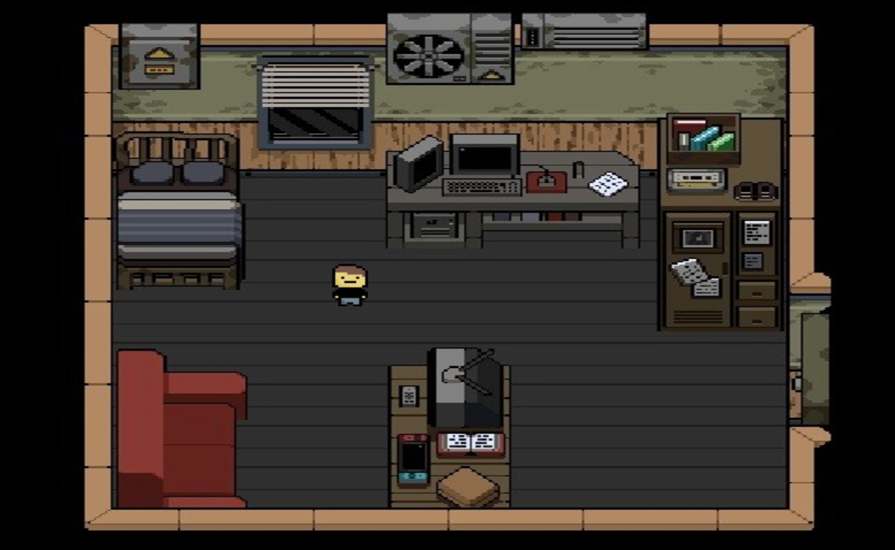
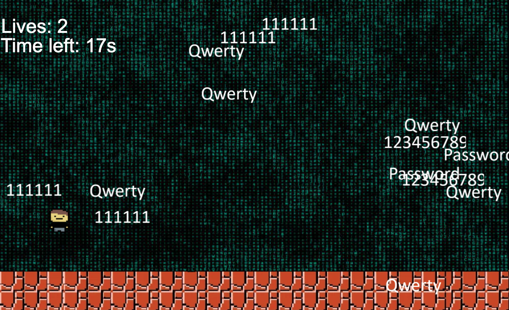

Educational Game Engine "Mr. H"
The Objective: To teach internet safety fundamentals to young kids in an interactive and fun way via a simple game
The Implementation: An exercise in applying strict Object-Oriented Programming (OOP) paradigms and ES6 modules without relying on pre-built game engines. Features a custom collision detection system and a native state-management loop.
Technical Specifications
- Custom collision detection engine developed with native coordinate mathematics.
- Object-driven minigame logic utilizing TypeScript classes for entity behavior.
- Engineered scene routing and transition logic between Start, Regional, and End phases.
- Managed team restructuring by reassessing codebase architecture mid-cycle.
Physics & Environment

